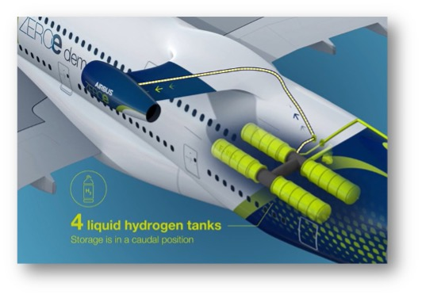
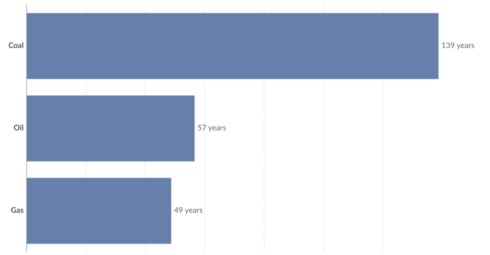

This paper presents an argument for the why and how aviation will most likely undergo significant changes to remain a successful industry in the future. The evidence suggests changes to the fuel that aircraft use as a substitute for the highly polluting kerosene-based fuels. Alternative aviation fuels look towards hybrid engines, electric-powered aircraft, and hydrogen which all help increase the sustainability of air travel. Although the solution may appear to be right there, there are sizeable drawbacks involved with each possible fuel option. Time and technology are essential when combatting these issues, but it is hard to estimate how long it will take for aircraft to be completely functional with the new changes. In time, renewable fuels could have multiple possibilities to help the environment paving the way to net zero emissions, smaller impacts on wildlife, and to cleaner environment.
Introduction
Currently, aviation contributes “2.4% of global carbon emissions” and this should be a “strong motivator for change” (Selkirk, 2020). Aviation is the flying or operating of aircraft, including drones and military equipment. Low-emission travel is a critical concern to the public transport industry, as there is a big deal of pressure from governments to find low or no-emission solutions and electric vehicles could be the answer.
Electricity and hybrid engines
Electric aircraft could “eliminate direct emissions” and are capable of “short to medium-sized trips” showing the potential innovation of electric and hybrid aircraft (Winkler, 2020). One article from the BBC explains that for “flights under 500 miles” less than “10% of global scheduled passenger fuel use and CO2 emissions can be substituted” by electric aircraft (Selkirk, 2020). Electricity has no by-product as it is not combusted, potentially being a very sustainable fuel source.
On the other side, an article calculates that jet fuel is “around thirty times more energy per kilogram” than even the “most advanced lithium-ion battery” available (Walker, 2019). “The plane would require batteries weighing 30 times more than its current fuel intake”, which would make it unable to leave the ground (Walker, 2020). Batteries produce considerably less energy than jet fuel per kilogram, therefore requiring more batteries on board, which would force aircraft to have bigger housing spaces for fuel. Selkirk (2020) goes on to state that electric aircraft are “unlikely to have a major impact” against current aviation emissions as an electric aircraft can only take 2 to 12 passengers and most commercial aircraft have a bigger capacity (A330 holding between 210 and 250) (Selkirk, 2020). More advanced batteries and/or aircraft designs are needed to fulfil sustainable air travel, which end up investing time and money.
To avoid this problem hybrid engines could be used in the near future. Having already been invented, hybrid engines use a mix of fossil fuels and electric power, switching between the two during the flight when more or less power is required. Hybrid electric aircraft “typically use electric motors for takeoff and landing, while conventional engines give power while in the air” (Amprius Technologies, 2023). Although, hybrid engines do not completely reduce carbon emissions, but could cut current emissions down by “up to 75%” (Hybrid Air Vehicles, 2023). However, the use of hydrogen could be implemented into the hybrid engine, becoming carbon neutral.
Hydrogen
Hydrogen is considered a very possible replacement as it matches the speed of currently used planes and is 100% reliable, sustainable, and emits no pollutants. Molloy (2019) suggests a study that shows liquid hydrogen’s energy density is 33.6 kWh/kg against jet fuel which only produces 12-14 kWh/kg (approximately 2.8 times).
However, hydrogen has a larger volume at typical atmospheric pressure and temperature. With hydrogen having the property of a larger volume and storing the same amount of energy as jet fuel, the storage tanks would need to be four times the size having a similar problem with batteries. Impractical space would be needed to be made for these tanks, forcing planes to become significantly larger, or we must wait on new technology to compact hydrogen and store it. A British technology company, ‘Ultima Forma’, is developing “ultra-thin liners” made from copper due to steel being corroded by hydrogen (Piesing, 2022). Hydrogen is unique, having extremely small molecules, which can easily escape even the “densest potential tank material of all, a layer of steel” (Kwon, 2022). This would force new precautions to be in place, for example, sensors capable of “detecting any leaks in milliseconds” and hydrogen valves being insulated to prevent leakage, or “hydrogen ventilation systems” to divert hydrogen from other parts of the aircraft (Kwon, 2022). New technology must stem from these new precautions taking more time than would be anticipated to start using hydrogen as a fuel source. On top of this, it’s exceedingly difficult to transport the fuel into the aircraft. An article states a “robotic arm’ could be used as a solution requiring this to be designed before the aircraft is in use (Piesing, 2022). Too much technology is required before corporations can even consider using hydrogen as a replacement for current aviation fuels.
One reason to invest into the technology – from an environmental perspective – is that hydrogen, after being combusted, only leaves behind a by-product of water which is completely harmless to the environment and electricity has no by-product as it is not combusted. Along with electricity, hydrogen is renewable and does not produce any noise and air pollution. The other fuels are still dangerous to the environment, by continuously enhancing the greenhouse effect and not entirely solving the problem. Hydrogen could be dangerous when carelessly handled and can cause dangerous explosions or when in fatal crashes destroy the environment around it.
What the future presents?
Airbus present their “ZEROe” concept where they are researching “hybrid-hydrogen” engines to power their three unique designs such as in Figure 1. They attempt to meet their milestones as soon as possible, working towards their “ambition of bringing to market a hydrogen-powered commercial aircraft by 2035” (AIRBUS, 2023). Figure 1: A hybrid-hydrogen conceptIMAGE ADDRESS
Figure 2 suggests we will exhaust all fossil fuels in this century (Our World in Data, 2021). Using renewable energy or other fuels instead of only replacing fossil fuels is vital to prevent the risk of exhausting a resource.
Figure 2: The years left for each fossil fuel until its exhausted
It is important that major aviation industries must change as soon as possible before it’s too late and we suffer irreversible changes.
Conclusion
It can be argued if renewable fuels are developed then there would be no need for a redesign, but large-scale use of such fuels appears far off. Due to the fact that major research and development of innovative technology, superconducting materials and rigorous testing are necessary, to ensure the safety of the passengers before integrating electricity and hydrogen as commonly used fuel for aircraft. A quicker alternative, biofuels, could be used as an initial replacement but studies have shown this is not as sustainable for the environment as the other fuels discussed. As a long-term solution hybrid and hydrogen engine replacements are likely to appear in the future.